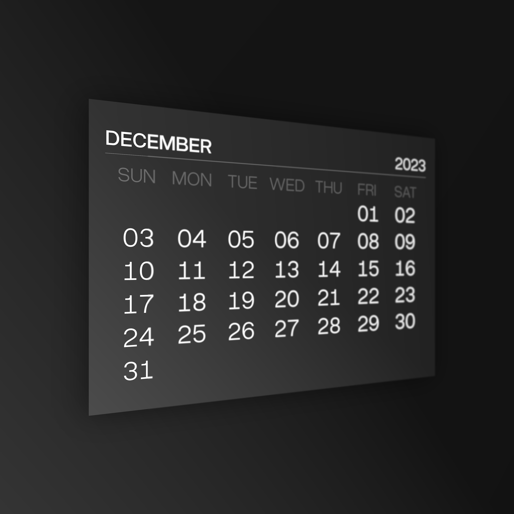
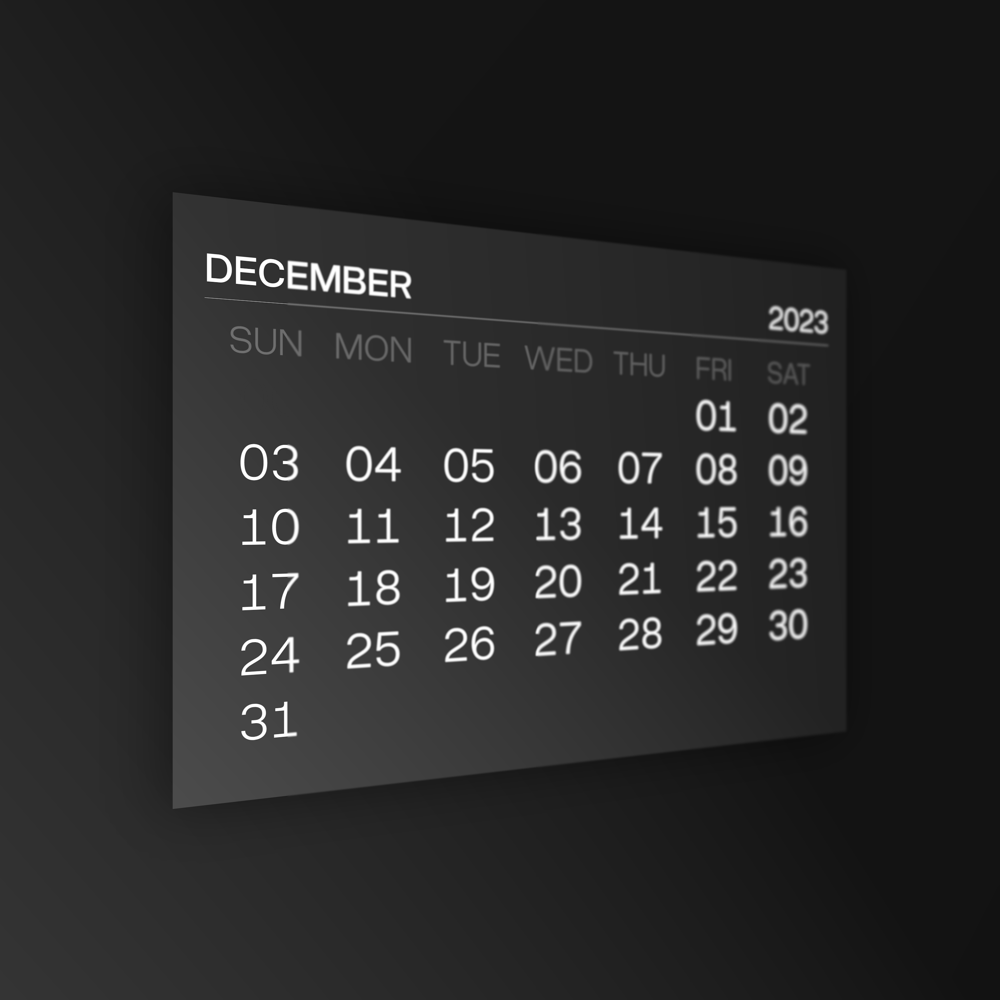
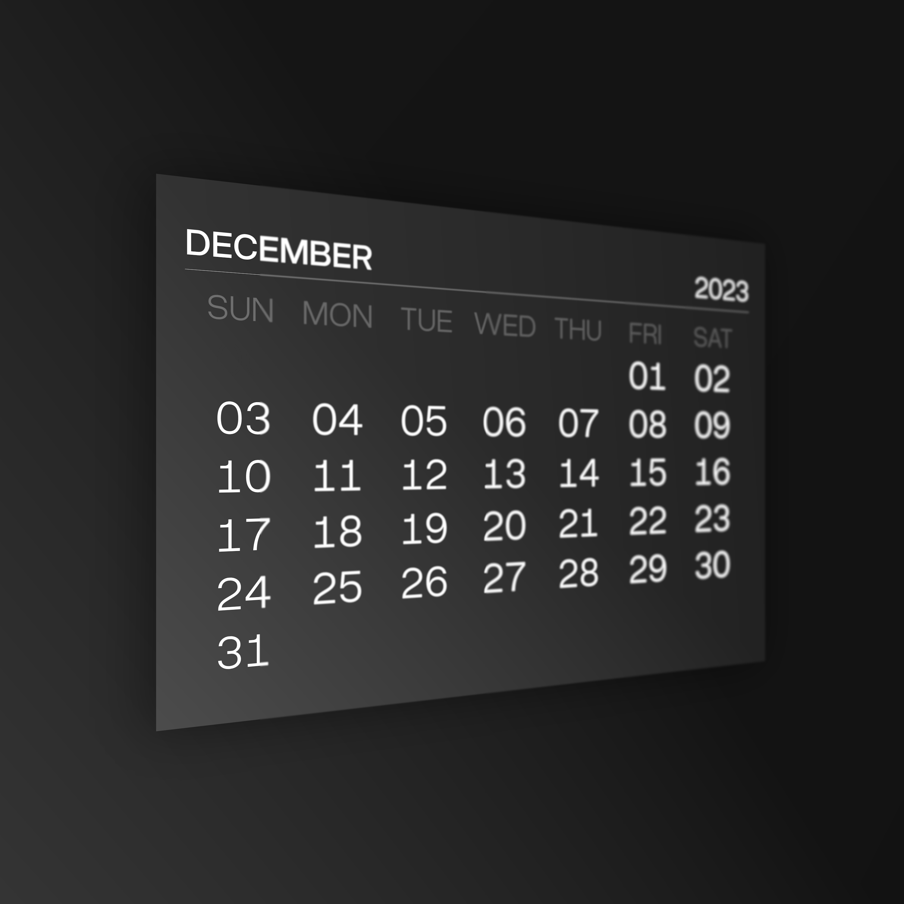
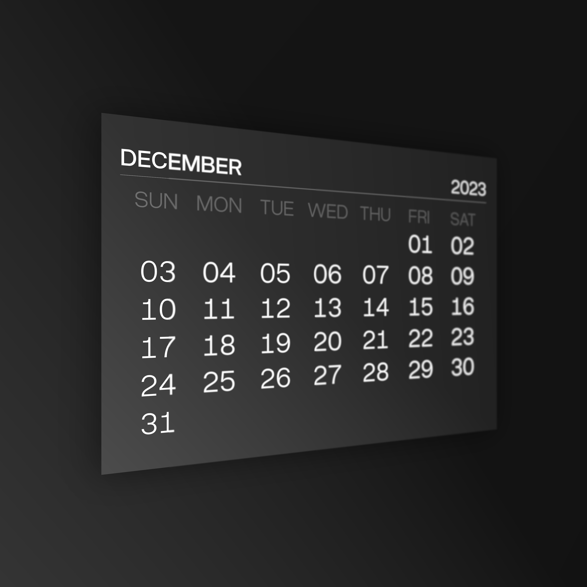

From a dumb mockery of the overutilised "Swiss" type design to a semi-serious workhorse, Overused Grotesk turns itself into a copycat by imitating the most distinguishing features of the ubiquitous Helvetica. However, the typeface doesn't stop at purely being a copycat; it wants to be a multipurpose and multilingual, though quirky and nonserious one.
The fonts are free & open-source, and any contributions would be greatly appreciated. If you are planning to show this typeface to someone or submit it to a font collection, please remember to link my GitHub repository, or at least this page. It's not mandatory, but it saves a lot of headaches (trust me).
Disclaimer: This is a work in progress. Even if the fonts and sources are public, the typeface is, as of now, under development. Please be careful if you plan to use this typeface on a large scale.
Designers
Year
License
Classification
Styles
Glyphs
Languages
RandomMaerks
2023 – 2025
SIL Open Font License
Sans-serif
16
1428
Abaza, Acheron, Achinese, Acholi, Achuar, Shiwiar, Afar, Afrikaans, Aguaruna, Ahtna, Alekano, Aleut, Alonquin, Alutiiq, Amahuaca, Amarakaeri, Amis, Anaang, Andaandi, Dongolawi, Anuta, Aragonese, Arbëreshë Albanian, Asháninka, Ashéninka Perené, Balinese, Banjar, Bari, Basque, Batak Dairi, Batak Karo, Batak Mandailing, Batak Simalungun, Batak Toba, Belarusian, Bemba (Zambia), Bena (Tanzania), Bikol, Bini, Bislama, Borana, Arsi, Guji Oromo, Bosnian, Breton, Buginese, Bulgarian, Candoshi, Shapra, Caquinte, Caribbean Hindustani, Cashibo, Cacataibo, Cashinahua, Catalan, Cebuano, Central Aymara, Central Kurdish, Chachi, Chamorro, Chavacano, Chickasaw, Chiga, Chiltepec Chinantec, Chinese Buriat, Chokwe, Chuukese, Cimbrian, Cofán, Cook Islands Māori, Cornish, Corsican, Creek, Crimean Tatar, Croatian, Czech, Danish, Dehu, Dungan, Dutch, Eastern Arrernte, Eastern Oromo, Efik, English, Erzya, Faroese, Fijian, Filipino, Finnish, French, Friulian, Galician, Ganda, Garifuna, German, Gheg Albanian, Gilbertese, Gooniyandi, Gourmanchéma, Guadeloupean Creole French, Gusii, Haitian, Halh Mongolian, Hani, Hawaiian, Hiligaynon, Hopi, Huastec, Hungarian, Hän, Icelandic, Iloko, Inari Sami, Indonesian, Irish, Italian, Ixcatlán Mazatec, Jamaican Creole English, Japanese, Javanese, Jola, Fonyi, K'iche', Kabuverdianu, Kaingang, Kala Lagaw Ya, Kalaallisut, Kalenjin, Kalmyk, Kamba (Kenya), Kaonde, Kaqchikel, Karachay, Balkar, Karelian, Kashubian, Kazakh, Kekchí, Kenzi, Mattokki, Khasi, Khoekhoe, Kikuyu, Kimbundu, Kinyarwanda, Kirghiz, Kituba (DRC), Komi, Permyak, Kongo, Konzo, Kumyk, Kven Finnish, Kölsch, Ladin, Ladino, Latgalian, Lithuanian, Lombard, Low German, Lower Sorbian, Lozi, Luba, Lulua, Lule Sami, Luo (Kenya and Tanzania), Luxembourgish, Macedonian, Makonde, Malagasy, Malaysian, Maltese, Mandinka, Mandjak, Mankanya, Manx, Maore Comorian, Maori, Mapudungun, Marshallese, Matsés, Mauritian Creole, Meriam Mir, Meru, Minangkabau, Mirandese, Mohawk, Moksha, Mongolian Buriat, Montenegrin, Munsee, Murrinh, Patha, Mwani, Mískito, Naga Pidgin, Ndonga, Neapolitan, Ngazidja Comorian, Niuean, Nobiin, Nogai, Nomatsiguenga, North Azerbaijani, North Marquesan, North Ndebele, Northern Kurdish, Northern Qiandong Miao, Northern Sami, Northern Uzbek, Norwegian, Nyanja, Nyankole, Occitan, Ojitlán Chinantec, Omaha, Ponca, Orma, Oroqen, Otuho, Palauan, Pampanga, Papantla Totonac, Papiamento, Paraguayan Guaraní, Pedi, Picard, Pichis Ashéninka, Piemontese, Pijin, Pintupi, Luritja, Pipil, Pite Sami, Pohnpeian, Polish, Portuguese, Potawatomi, Purepecha, Páez, Quechua, Romansh, Rotokas, Rundi, Russian, Russian Buriat, Rusyn, Samoan, Sango, Sangu (Tanzania), Saramaccan, Sardinian, Scots, Scottish Gaelic, Sena, Serbian, Seri, Seselwa Creole French, Shawnee, Shipibo, Conibo, Shona, Shuar, Sicilian, Silesian, Slovak, Slovenian, Soga, Somali, Soninke, South Marquesan, South Ndebele, Southern Aymara, Southern Qiandong Miao, Southern Sami, Southern Sotho, Spanish, Sranan Tongo, Standard Estonian, Standard Latvian, Standard Malay, Sundanese, Swahili, Swedish, Swiss German, Tagalog, Tahitian, Tatar, Tedim Chin, Tetum, Tetun Dili, Ticuna, Toba, Tok Pisin, Tokelau, Tonga (Tonga Islands), Tonga (Zambia), Tosk Albanian, Tumbuka, Turkish, Tuvalu, Tuvinian, Tzeltal, Tzotzil, Uab Meto, Udmurt, Ukrainian, Umbundu, Ume Sami, Upper Guinea Crioulo, Upper Sorbian, Venetian, Veps, Vietnamese, Võro, Wallisian, Walloon, Walser, Waray (Philippines), Warlpiri, Wayuu, West Central Oromo, Western Abnaki, Western Frisian, Wiradjuri, Wolof, Xhosa, Yanesha', Yao, Yucateco, Zapotec, Zulu, Zuni, Záparo